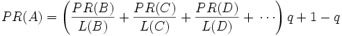
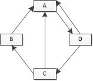
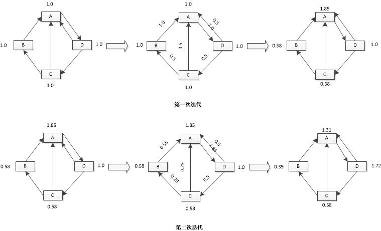

前言
PageRank算法即网页排名，是由Google创始人拉里·佩奇和谢盖尔·布林构建搜索引擎原型时提出的链接分析算法。Google的成功，使得该算法在搜索引擎界和学术界受到空前关注，后来的许多链接分析算法都是基于PageRank算法衍生出来的。搜索引擎先根据相关性算法，找出与关键词最相关的网页，然后使用PageRank算法调整排名，能大大提高搜索的质量。PagePank算法除了在网页排名中有重要的应用之外，也可以用于学术论文重要程度排名、个人社交影响力排名等类似场景。
应用背景
为了“粘”住用户，游戏设计者通常会在游戏中设置各种道具奖励，玩家可以通过登录、保持在线等方式领取游戏道具，对于道具可以在各个玩家之间流通的棋牌类手游而言，会存在这样一个“刷道具”的问题：一个玩家创建许多账号（俗称“小号”），然后使用打牌等方式把“小号”的道具汇聚到若干几个账号（俗称“大号”），当汇聚到一定的量之后，然后低价兜售账号，获取收益。“刷道具”现象会极大影响游戏的经济系统平衡，导致道具贬值，严重情况下甚至会弄垮整个游戏。手动封号，不够全面且反应慢，往往道具已经转出，再手动封号已经无济于事。自动封号就是定时执行一组封号规则过滤用户，然后封号，但是简单的条件组合很容易被“刷道具专业户”攻破，例如：
玩家打牌局数超过50局，胜率在90%以上，且赢的人中90%是新注册的账号，封号
该规则上线不足半天，“刷道具专业户” 就想出了多级 “中号” 的策略，即将5到10个“小号”的道具汇聚到一级“中号”，5到10个一级“中号”汇聚到二级“中号”。。。，最终再汇聚到若干“大号”，每个层级看起来都正常，轻松绕过封号规则。当然可以定义更加复杂的规则，但是实现起来会相当困难，且难以维护，在这种情况下，基于PageRank思想的自动封号策略就应运而生了。
PageRank算法的基本原理
PageRank提出之前，有的研究者将链入数量当做唯一指标来评价网页重要性，即链入越多，网页的重要性越高，PageRank算法在此基础之上，还考虑了网页的质量，两者相结合以获取更好的网页重要性评价标准。所以对于一个网页重要的表示，是基于以下两个假设：
- 数量假设： 如果一个网页，被其他网页引用（指向）的越多，该网页越重要；
- 质量假设： 其他条件相同，越是重要的网页，它指向的网页也越重要。
PageRank算法首先给每个网页节点赋予相同的PR值，通过一轮轮迭代，直至稳定，PR值越大的网页越重要。由于PR值只与网页之间相互引用的链接结构有关，与用户输入无关，所以可以离线计算PR值，用于用户实时查询。
PageRank的计算公式如下：

其中PR(A)为本轮迭代A网页的PR值，PR(B),PR(C),PR(D)…为上一轮B、C、D…的PR值，L(X）表示X的出度，q表示阻尼系数，表示上网者到达一个页面后，继续向后浏览的概率，1-q表示上网者停止浏览随机跳转到新网页的概率，大量统计的结果表明q一般取0.85左右。以下图为例:

下面是该网页链接关系的前两次迭代结果

经过多次迭代，直至结果收敛，收敛条件与设定的精度有关。
自动封号PageRank算法的应用及调整
棋牌游戏中，各个玩家之间的道具输赢关系就是一张巨大的有向图，图中节点表示各个玩家，边表示输赢结果，对应于PageRank的两个假设，“刷道具”玩家的可疑度也满足以下两个假设：
- 数量假设：一个玩家，他赢新注册玩家的数量越多，该玩家的可疑度越大；
- 质量假设：其他条件相同，一个玩家的可疑度越大，赢他的玩家的可疑度也会越大。
考虑到实际情况，自动封号在使用PageRank算法时，做了以下3个方面的调整：
- 初值设定
初值并不是都是设置为1，只对新注册的玩家设置为1，老玩家设置为0。因为参与刷道具的小号都是最近注册的，所以只考虑新注册玩家的贡献值，老玩家只有传递贡献值的作用。另外，在迭代过程中，需要保证没有入度节点PR永远为初值（0或1）； - PageRank值的分配
对于PageRank算法而言，PR值的分配是平均的，对于A->B, A->C链接关系而言，PR值分配情况是：贡献给B、C的PR值都是PR（A)/2。如果A输给B 3000单位道具，A输给C 6000单位道具， 则调整后的PageRank值分配情况是：贡献给B的PR值为PR(A)/3, 贡献给C的PR值为2*PR(A)/3。 - PageRank值的有效传播
PageRank算法对于PR值的传播都是100%的，即传递给所有指向节点的PR值之和等于该节点的PR值。但是，在我们的应用中，需要考虑一种情况：玩家输的道具远小于赢的道具，例如玩家A赢了1000单位道具，输了10单位道具，这时候把A的PR值全部贡献出去显然不合理，一种可选方案就是将 PR值*（输的道具量/赢的道具量） 作为传递的有效值，然后再按照比例分配。
按照如上三个方面调整之后，我们可以按照10min一次频率，跑过去12h的数据的方式来执行该策略，然后把PR值大于给定阈值的玩家作为可疑用户，交给封号模块。
封号效果及后续改进
基于PageRank思想的自动封号策略上线大约一周之后，游戏的激活终于回稳，期间“刷道具专业户”也经历过多次尝试，但是辛辛苦苦刷的道具总是能在某个时刻被截住，所以最终放弃抵抗。后续改进主要有两个方面：实时性和结果评估。实时性方面，10min一次的频率还是有可能让“刷道具专业户”钻空子，可以考虑使用流式计算，使用滑动窗口的方式；结果评估，目前该策略效果的评估是通过手动查询来完成的，这只能核对查准率，无法验证查全率，是不是会有“漏网之鱼”呢，所以需要一套机制，从总体上评价封号的效果。